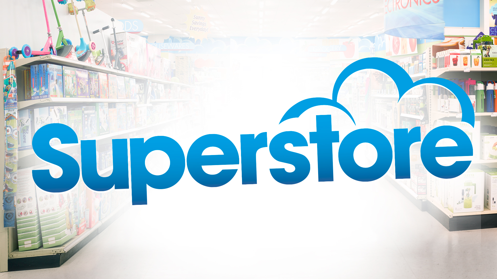

Intro

"Our team utilized d3js to conduct an in-depth analysis of a superstore dataset, exploring various
dimensions of sales and profit. Our collaborative effort resulted in comprehensive insights:
Damilola Oladipupo investigated sales by location, revealing geographic trends and patterns.
Samson Adeyemi focused on profit by product across years, highlighting profitability trends by
product categories over
the period 12months.
Patel Jimi utilised Collapsible Tree to analyse sales by products across multiple regions,
identifying key factors
influencing product performance.
Ahsan focused on top items sold in every category across months , highlighting sales trends.
Rebecca Agbolade visualized sales by quantity using a bubble chart, providing a clear understanding
of quantity-based sales dynamics.
By leveraging various charts and visualization techniques, our team delivered a comprehensive
analysis, offering valuable insights into the superstore dataset."

Rebecca's project involved leveraging an HTML document seamlessly integrated with JavaScript and the
D3.js package.
Within this framework, she developed a drop-down menu-based interactive sales data visualization
tool.
This tool allows users to select regions, dynamically altering the chart to display aggregated sales
data specific to the chosen region.
Rebecca implemented a scatter plot representation, with Countries depicted as bubbles.
The position of each bubble within the plot signifies the relationship between quantity and revenue,
while its size correlates with the overall sales revenue.
One of the notable features of Rebecca's work is the inclusion of tooltips.
These tooltips provide users with detailed insights when hovering over each country's bubble,
offering comprehensive information about that Country sales performance.
Rebecca's project demonstrates her adeptness at integrating various technologies to create an
interactive and informative visualization tool.
Her attention to detail and commitment to user experience enhancement are evident throughout the
project, making it an asset for analysing and understanding sales data.

Jimi made a significant impact on our team project through the creation of a meticulously crafted
collapsible tree structure.
This structure serves as a robust framework for organizing our sales data, sorting it into
categories, subcategories, and products.
Design prioritizes the identification of top-performing items within each category and subcategory,
leveraging sales metrics for precise analysis.
In addition to this fundamental functionality, she introduced a region filter feature, allowing
users to delve into sales trends specific to geographical areas.
This enhancement provides a more nuanced understanding of regional performance, facilitating
targeted decision-making.
Furthermore, she implemented the tooltips that elevates the user experience by offering detailed
insights into sales data.
These tooltips provide comprehensive information about each item, including total sales figures and
graphical representations of sales trends over different periods.
This interactive feature enhances usability and enables users to extract actionable insights
efficiently.
Overall, her thoughtful approach to design and dedication to enhancing functionality have greatly
improved our ability to explore and analyse sales data.
Her contributions are instrumental in empowering informed decision-making and strategic planning
within our project.

The Animated bar chart shows sales data across states and years.
Users can select specific years and regions to focus their analysis. The chart visualizes the top 15
selling states, with bars representing sales amounts.
Each bar's color distinguishes states, and hovering over a bar reveals additional details like the
associated region.
The chart dynamically updates based on user selections, offering insights into sales trends and
aiding strategic decision-making for businesses.

Ahsan's project showcases a Strategic Sales Insights sunburst chart, meticulously designed to
encapsulate a vast array of sales data across multiple hierarchical levels.
Beginning with a broad yearly overview, the chart delves deeper into quarterly breakdowns, followed
by monthly, then categories and product-specific sales details.
Each segment's size within the chart corresponds to the quantity of products sold, offering a
visually rich representation of sales data.
He has implemented interactive features, including zooming capabilities and tooltips, to enhance
user engagement and facilitate trend identification.
His work shows a professional approach to data visualization, providing stakeholders with actionable
insights to drive informed decision-making processes.

As part of the module requirement for our group project, Samson worked on Stacked Area Chart to
analyse profit trends across different product categories over time.
The visual was developed using D3.js version 7, the chart dynamically loads data from a JSON file,
allowing users to explore annual profit trends by selecting specific years through a dropdown menu.
The chart was designed with careful attention to detail, featuring a clean layout with clearly
labelled axes and an intuitive user interface.
Users can easily navigate and interpret the visualization, gaining insights into how profits vary
across months within each selected year.
Each area in the chart represents a distinct product category, stacked on top of one another to
visualize the cumulative profit contribution of each category over time.
The colours used are carefully chosen to enhance visual clarity and aid in distinguishing between
different product categories.
To facilitate deeper analysis, the chart includes interactive elements such as tooltips, providing
users with detailed information when hovering over specific data points.
Overall, the stacked area chart provides a powerful tool for visualizing and analysing profit trends
by product category, empowering users to make informed decisions and uncover valuable insights for
business growth and optimization.
Team
TM_SQUAD Team Members
Name: Rebecca Agbolade
Student Number:D3077427
Chart: Bubble Chart
Name: Jimi Patel
Student Number:D3777000
Chart: Collapsible Tree Chart

Name: Adeyemi Samson
Student Number:D3310898
Chart:Stacked Area Chart
Name: Oladipupo Damilola
Student Number:D3004476
Chart: Animated Bar Chart

Name:Ahsan Ahsan
Student Number:D3520925
Chart: Zoomable Sunburst Chart